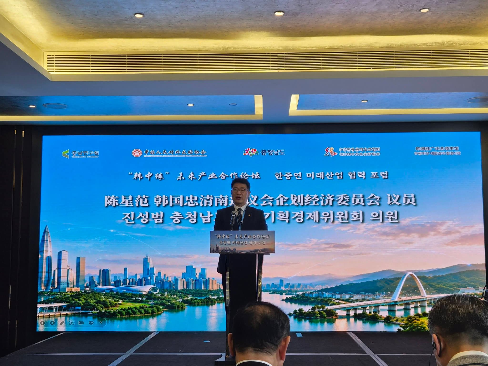

현장을 듣습니다
주민의 경험과 지역의 목소리를 의정활동의 출발점으로 삼습니다.
현장의 목소리를 의정의 출발점으로 삼고, 더 나은 변화를 도민과 함께 만들어가겠습니다. 진심 하나로, 지역의 오늘과 충남의 내일을 잇습니다.
충청남도의회 의원 · 기획경제위원회

충남의 성장이 숫자에 머물지 않고 도민의 소득과 복지로 돌아가도록 정책의 실행력을 따져 묻겠습니다.
어려운 순간에 다시 일어설 수 있도록, 지역 현실에 맞는 충남형 기본금융 모델을 만들겠습니다.
농어촌 기본소득과 햇빛소득마을이 지역 안에서 돌고 일자리로 이어지는 구조를 만들겠습니다.
경력 정보는 충청남도의회 홈페이지의 의원 정보와 함께 관리합니다. 충청남도의회 공식 프로필 ↗
말에서 끝나지 않도록 문제의 맥락과 진행 상황을 확인하고, 가능한 해법과 후속 점검을 공개하겠습니다.
주민의 경험과 지역의 목소리를 의정활동의 출발점으로 삼습니다.
자료와 제도를 확인하고, 문제의 원인과 책임을 구체적으로 짚습니다.
질문·조례·예산 심의 등 의회의 역할로 실현 가능한 해법을 찾습니다.
답변과 후속 조치를 살피고, 진행 과정을 도민과 나눕니다.
활동을 날짜순으로 확인하고 유형과 키워드로 찾아보세요.
천안삼거리공원에서 열린 책 축제의 독서·체험·공연과 작가와의 만남 등 시민과 함께한 현장을 전했습니다.
활동 자세히 보기 ↗천안시청에서 열린 천안시·충남도의원 간담회에서 부성2동 주민의 관점으로 성성·업성동의 난개발 문제를 말씀드렸습니다.
활동 자세히 보기 ↗충남도의회에서 연구모임 첫 회의를 열고 충남형 기본금융 정책 실현 방안 마련을 위한 활동을 시작했습니다.
활동 자세히 보기 ↗
국제교류 · 현장활동광둥성 당국자·현지 한국 기업인들과 교류하며 AI 시대의 기술·인재·산업협력 방안을 모색했습니다.
활동 자세히 보기 ↗검색 결과가 없습니다. 다른 검색어나 유형을 선택해 주세요.
공개 자료를 확인한 기록부터 게시합니다. 조례·도정질문·발언의 원문은 도의회 공식 기록에서도 확인하실 수 있습니다.
도의회 공식 기록 ↗관심 의제를 자료, 현장 의견, 제안과 후속 점검으로 연결해 누구나 살펴볼 수 있는 기록으로 만들겠습니다.
지역의 인재와 산업이 함께 성장할 기반을 고민합니다.
전환의 기회와 부담을 지역에서 함께 살핍니다.
생활경제의 안정과 지역 안의 선순환을 모색합니다.
좋은 일자리와 안전한 일터를 위한 정책을 살핍니다.
지역마다 필요한 성장의 조건을 현장에서 찾습니다.
주민의 일상과 맞닿은 과제를 놓치지 않겠습니다.
※ 의제는 향후 현장 의견과 의정활동에 따라 구체화되며, 이 목록은 정책 방향을 소개합니다.
충남의 변화는 각 동네의 목소리를 듣는 데서 시작됩니다. 현장에서 만난 문제를 의정활동과 연결하겠습니다.
생활 속 불편과 지역의 가능성을 함께 살피고, 필요한 변화가 무엇인지 차근차근 확인합니다.
주민의 의견이 어떤 절차를 거쳐 검토되고 있는지, 가능한 범위에서 진행 과정을 알려드리겠습니다.
후원 자격과 기부 한도, 세액공제 및 영수증 발급 방법을 확인하실 수 있습니다.
최근 의정활동은 공식 자료를 확인해 정리합니다.
페이스북에서 더 많은 소식 보기 ↗
네이버 블로그 바로가기 ↗
천안삼거리공원에서 열린 책 축제의 독서·체험·공연과 작가와의 만남 등 시민과 함께한 현장을 전했습니다.
2026.09.28 · 페이스북천안시청에서 열린 천안시·충남도의원 간담회에서 부성2동 주민의 관점으로 성성·업성동의 난개발 문제를 말씀드렸습니다.
2026.09.22 · 페이스북충남도의회에서 연구모임 첫 회의를 열고 충남형 기본금융 정책 실현 방안 마련을 위한 활동을 시작했습니다.
최근 3개월 내 확인한 페이스북 게시물 가운데 지역 행사·간담회·정책 연구 소식을 추려 소개합니다. 각 항목을 누르면 게시물 원문을 확인할 수 있습니다.
정책 아카이브 안에서 연구와 정책 제안을 이어갑니다. 운영 현황과 연구 결과를 정리해 공유하겠습니다.
생활 속 불편과 정책에 대한 의견을 들려주세요.
의회 사무실로 연락해 주세요.
041-635-5224내용과 회신받을 연락처를 적어 보내주세요. 관련 사진·자료는 이메일에 첨부할 수 있습니다.
이메일 앱 열기 ↗seongbumjin@gmail.com
주민등록번호·계좌 비밀번호 등 민감한 정보는 보내지 마세요. 타인의 개인정보가 포함된 첨부자료는 필요한 부분만 남겨주세요.
의견은 공개 게시판에 게시되지 않습니다. 이메일 앱에서 직접 전송해야 하며, 이 홈페이지에서는 접수 여부를 확인할 수 없습니다.